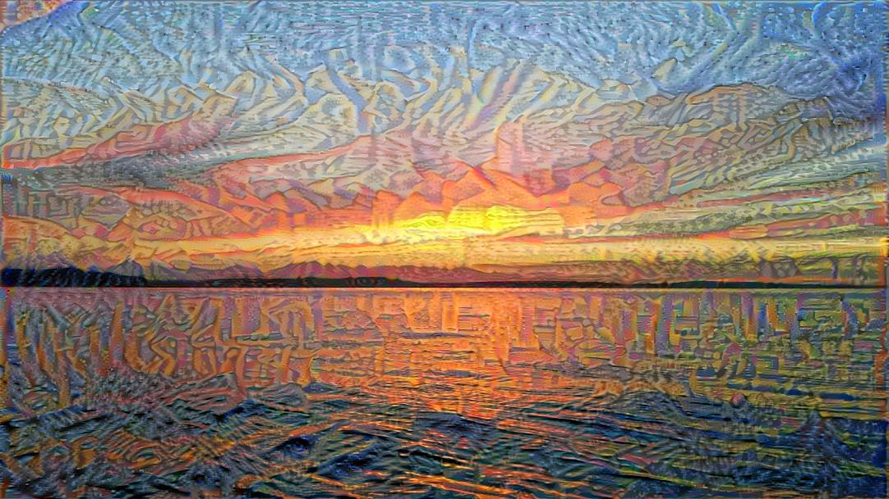

Mike Boyer
Laurel, MD
Boyer.Mike.E@gmail.com

Featured Work
Featured Work

Maze of the Minotaur
This was my Udacity Virtual Reality Developer Nanodegree Capstone Project. In it, you are a treasure hunter seeking to find 8 gems in a maze full of malicious baddies. Armed with your trusty raygun, you must find a way to exit safely with as many gems as possible. Developed for Google Cardboard on Unity, and tested on a Samsung Galaxy S7 Edge.
Find this on GitHub!A Night at the Museum
This project was also a part of the Udacity Virutal Reality Developer Nanodegree. This project is a showcase of various Virtual (and Augmented) reality capabilities. It features several videos showing VR (and AR) applicaitons such as Serious Sam VR, Google Earth VR, and Microsoft Hololens.
Find this on GitHub!The Maze
The Maze was one of my favorite Udacity Virtual Reality Developer Nanodegree projects, and provided inspiration for my capstone project, the Maze of the Minotaur. The focus of this project was to demonstrate locomotion, and the basics of animation in Unity.
Find this on GitHub!Neural Style Transfer
This was one of the final projects in Coursera's DeepLearning Specialization. Here, I trained a neural network to imitate the brush strokes from one image, and apply it to a photo I took at Alki Beach, in West Seattle, see above!
Find this on GitHub!
The Rube Goldberg Machine
This project was one of the High Immersion projects in the Udacity Virtual Reality Developer Nanodegree. Developed for the HTC Vive, the player must place objects so that the ball thrown will collect artifacts before reaching the goal in order to proceed to the next level.
Find this on GitHub!